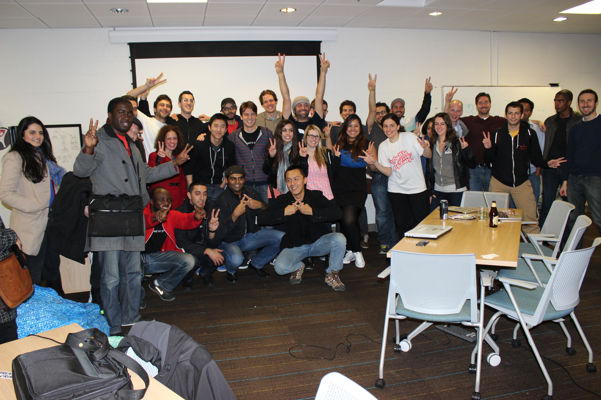

Mateo Fowler is a Digital Artist/Journalist who has lived and worked in the San Francisco Bay Area, and has a history of success with creative projects.
A Histoty of Hackathons

Hack For Peace in the Middle East It was February 1, 2014 - February 2, 2014: Saturday 8:00 AM - Sunday 8:00 PM